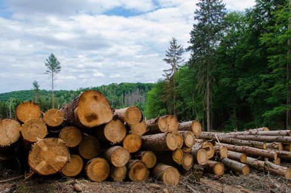
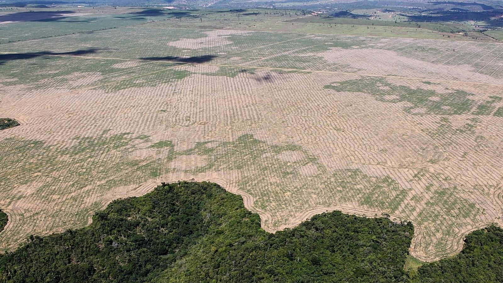

La deforestación es un proceso provocado por el hombre mediante el cual se elimina masa forestal, normalmente con el objetivo de cambiar la actividad a la que se va a dedicar dicho suelo.
En algunos países los bosques recuperan terreno, pero en general la tendencia planetaria es eliminarla por actividades como la explotación descontrolada o el crecimiento de la población.
La deforestación es incompatible con la especie: los bosques son aliados clave en la lucha contra el cambio climático y la desertificación por su capacidad como sumideros de CO2.

